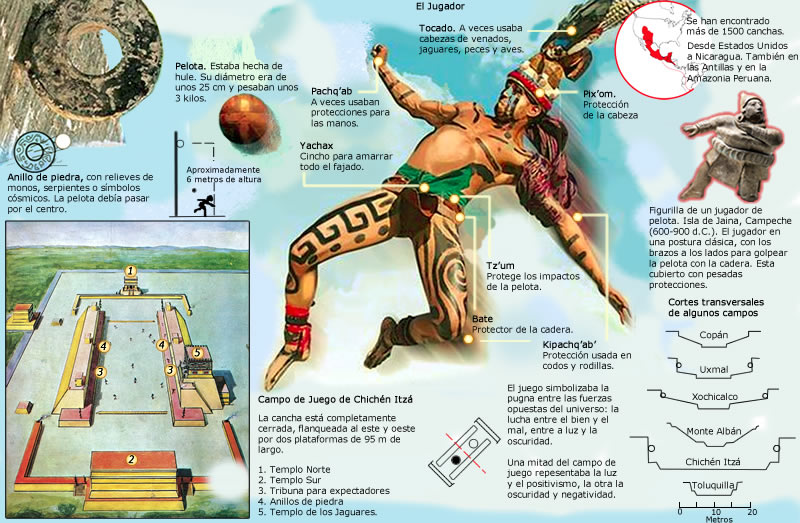
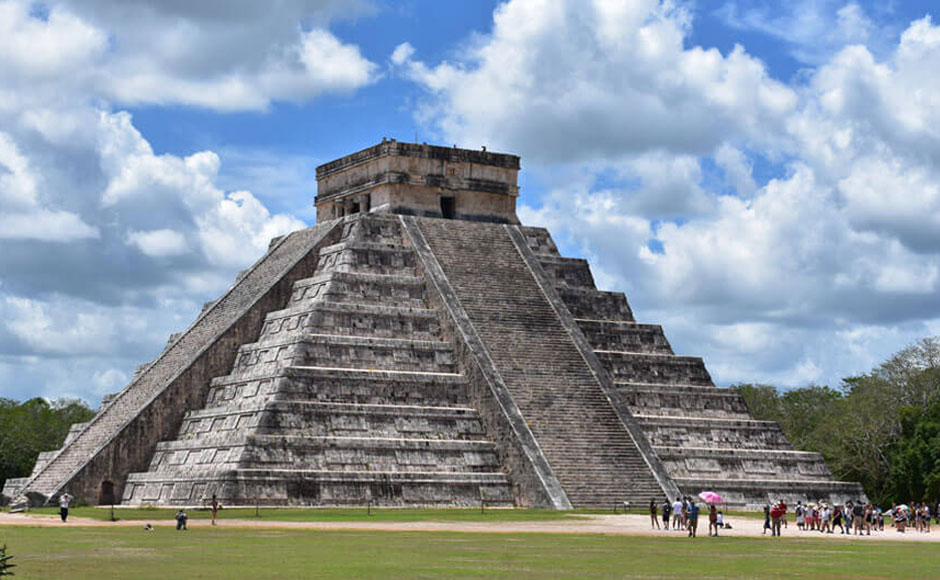

Descubre la maravilla de viajar por el mundo. ¡Haz clic para obtener más información!
Cancún

Cancún es uno de los destinos turísticos más famosos y visitados de México. Parques de entretenimiento, cenotes, pirámides, actividades acuáticas, vivir la fiesta al máximo…
¡Todo para unas vacaciones de diez lo puedes encontrar aquí!
Atractivos Turísticos



-
Playas
-
Chichén Itzá
-
Juego de la Pelota
-
Xcaret Park
Itinerario
Día 1: Xcaret
Empieza el día en el ParqueXcaret. Leer más
Día 2: Ruinas Mayas
Recorriendo las ruinas mayas de Chichen Itzá. Leer más
Día 3: Isla Mujeres
Descubre Isla Mujeres de día y asiste al Cirque du Soleil por la noche
Día 4: Ruinas Mayas
Ruinas mayas de Cobá. Cobá es una importante antigua ciudad maya diferente a otras.
Día 5: Cancún
De compras por Cancún y una noche para celebrar en el CoCoBongo